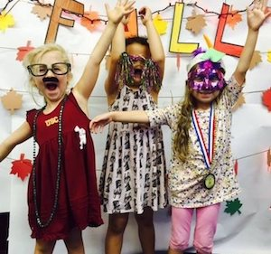
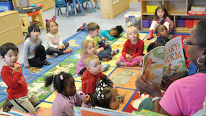
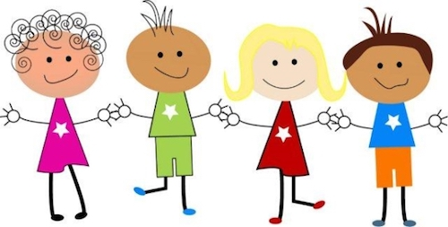

Welcome to Kids Klub!
Kids Klub is Pasadena’s premier child development center where every day leads to a new discovery! With additional locations in San Gabriel/Rosemead and South Pasadena, preschool, daycare, after school care and weekend care is now more convenient.
Owned and operated by husband and wife team Michael and Bambi Wojciechowski, Kids Klub was founded to provide, “…a place where children receive quality care in an environment that is safe, clean, and nurturing, with endless opportunities for learning through discovery; ... a place that not only fosters a child's physical, social, emotional, and intellectual development, but that takes it a step further by teaching the basics of discipline, respect and manners as well; ... a place that understands the stress of today's lifestyle and responds by opening early and staying open late; ... a place that is even open weeknights and weekends, so parents can have a night out!"
At Kids Klub, we are committed to providing the best possible care for your child, while also being responsive to your needs as parents. This is a unique and innovate approach to childcare. Our philosophy is a "Back to Basics" approach where we provide a safe, clean and stimulating environment for children to play, learn and grow in, while teaching the children self-esteem, respect and responsibility. Our belief in learning through the process of discovery is exemplified in our many educational "Discovery Areas" where children learn in a hands-on environment. Here they have opportunities that will spark their interest, stimulate their curiosity and invite interaction that they would not encounter in a home setting. Our modern, expansive facility allows us to provide parents with a place where all the needs of their child can be met under one roof, including: Infant Care, PreSchool, Afterschool Care, Evening & Weekend Drop-Off Care and extra-curricular classes. We even offer great camps; please visit our NEW Camp Kids Klub website.
All programs are fully licensed and meet or exceed State required staffing ratios to provide the highest level of quality care and supervision. Our teachers are experienced and highly trained in childhood education, first aid and CPR. All staff members are cleared prior to hiring through the Department of Justice background clearance system and the National Child Abuse Index.
